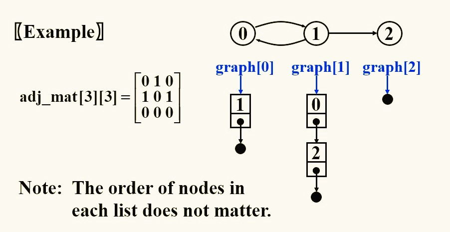
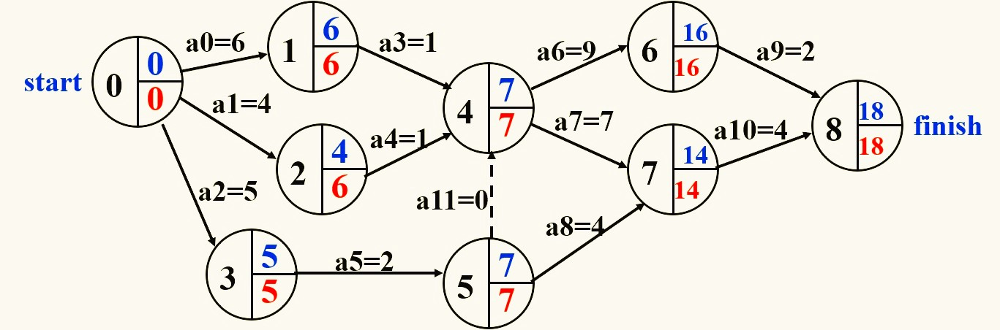
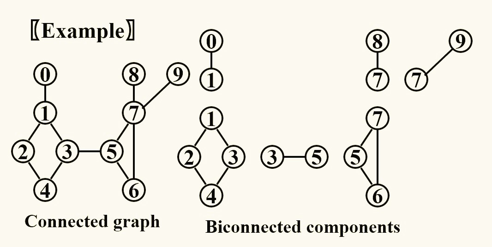
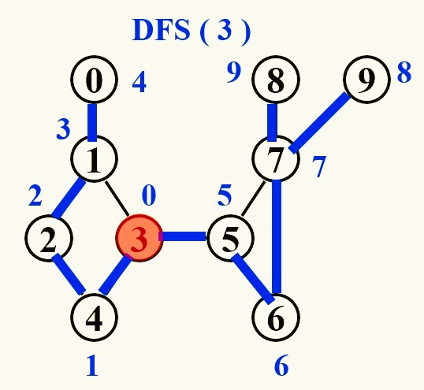
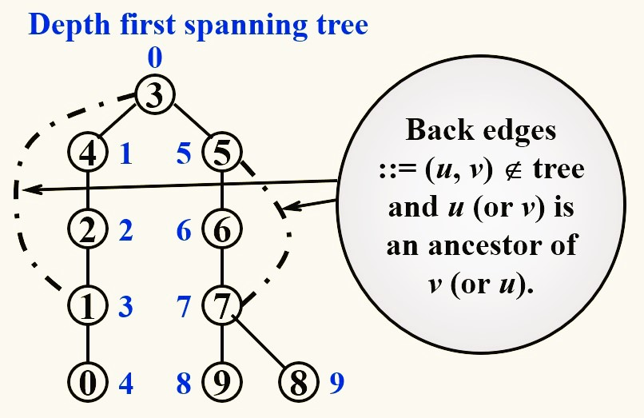
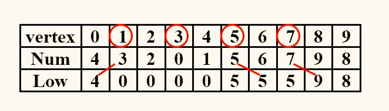

Chapter2 Graph
2.1 Terminologies
-
$G(V,E)$
where $G$ is graph, $V$ is finite nonempty set of vertices（顶点）, and $E$ is finite set of edges（边） -
complete graph
graph that has the maximum number of edges （for undirected graph: $E=\frac{n(n-1)}{2}$） （for directed graph: $E=n(n-1)$） -
subgraph
$V(G')\subseteq V(G), E(G')\subseteq E(G)$ -
simple path
the path passing $v_{i1},···,v_{in}$ which are distinct -
connected undirected graph
for every pair of $v_i$ and $v_j$, there exist undirected paths between $v_i$ and $v_j$ -
component of undirected graph
the maximal connected subgraph -
strongly connected directed graph
for every pair of $v_i$ and $v_j$, there exist directed paths from $v_i$ to $v_j$ and from $v_j$ to $v_i$
（if the graph is connected without direction to the edges, then it is said to be weakly connected） -
degree number of edges incident to $v$
2.2 Representation
Adjacency Matrix 邻接矩阵:
Note
如果表示的是一个无向图，则甚至可以用一维数组表示：
$$a[\frac{n(n+1)}{2}]={a_{11},a_{21},a_{22},···,a_{n1},···,a_{nn}}$$
其中$a_{ij}$对应于$a$的数组下标为$\frac{i(i-1)}{2}+j$
Adjacency Lists 邻接链表:

Adjacency Multilists 邻接多重链表:

2.3 Variation and Application
Topological Sort
Definition
AOV: Activity On Vertex Network （顶点表示活动）
AOE: Activity On Edge Network（边表示活动）
predecessor（前驱）：在有向图中，如果从$i$到$j$有路径，则称$i$为$j$的前驱
DAG: Directed Acyclic Graph（有向无环图）
可行的AOV网络一定是DAG。
拓扑排序不是唯一的。
判断AOV网络是否可行：
- 寻找一个入度为0的点
- 若存在则打印该点，若不存在则说明不可行
- 将其指向的点的入度减1
- 重复1~3步
时间复杂度：
$$T=O(N^2)$$
优化方法：寻找入度为0的点若采用遍历的方法很耗时，因此可以考虑将这些入度为0的点存放到栈/队列中。
时间复杂度：
$$T=O(|V|+|E|)$$
Shortest Path Algorithms
Dijkstra's Algorithm:
常规算法（如上）：
$$T=O(V^2+E)$$
适用于稠密的图。
另一种算法（优先队列）：
$$T=O(E\log V)$$
适用于稀疏的图。
AOE Network
点表示状态，边表示事件。

- EC：earliest time of completion
表示最早能够完成的时间
$EC[w]=\max\{EC[v]+C_{v,w}\}$，$v$指向$w$
是正着算的 - LC：latest time of completion
表示最晚必须完成的时间
$LC[v]=\min\{LC[w]-C_{v,w}\}$，$v$指向$w$
是倒着算的 - slack time 松弛时间
衡量事件的紧迫程度
$sl(v,w)=LC[w]-EC[v]-C_{v,w}$ - critical path 关键路径
包含全部松弛时间为0的事件的路径
Network Flow Problems
- 画两张图$G_f$，$G_r$，其中$G_f$一开始没有流，$G_r$一开始和原图一致
- 在$G_r$中寻找增广路径，即可以从起点流向终点的路径
- 将该路径及对应的流量画在$G_f$上
- 在$G_f$中画出对应的逆向路径（如果本来就有逆向路径则加上对应的值），并且将本来的正向路径的流量减去对应的值
- 重复2，3步，直到$G_r$中没有箭头指向终点或没有箭头来自起点
Minimum Spanning Tree
Prim's Algorithm
Kruskal's Algorithm
DFS
articulation point 关节点:
如果删掉关节点及所连的边，那么连通分量就会增多。
biconnected graph 重连通图:
连通图且没有关节点。
biconnected component 重连通分量:
最大的重连通子图。

寻找关节点的标准步骤：
-
任取一个顶点开始深度优先搜索，并按照搜索顺序从0开始编号 
-
获得深度优先搜索树，编号小的在上，编号大的在下，如果有没有在深度优先搜索时遍历到的边，则在树上用虚线连接，表示back edge 
-
判断：root是关节点当且仅当它至少有两个孩子
其他点是关节点当且仅当它至少有一个孩子，且不可能在往下至少走一步的情况下回到它的祖先 -
更进一步：令$Low(u)$等于
1———$Num(u)$
2———$\min\{Low(w)\}$，其中$w$是$u$的孩子
3———$\min\{Num(w)\}$，其中$(u,w)$是一条back edge 这三者中的最小值，列一张表
 -
新的判断：关节点$u$的充要条件：
有至少两个孩子的root或者
至少有一个满足$Low(child)\geqslant Num(u)$的孩子
Euler Circuits
略。
Union and Find
Union-by-Size 根据大小合并:
总是把小的树连到大的树上。
$S[root]=-size$，即根存储的数据不再是$-1$，而是$-size$、
设有$N$个合并，$M$个查找，则时间复杂度为$O(N+M\log N)$、
Union-by-Height 根据高度合并:
总是把矮的树连到高的树上。
Path Compression 路径压缩:
与根据高度合并不兼容。
让所有的结点都直接跟根节点连接，在寻找根结点的时候将经过的节点依次往更高一级连接。